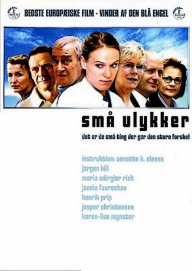

#9138 Kleine Mißgeschicke
 
 IMDB-Wertung: 6.6 / 10
IMDB-Wertung: 6.6 / 10  Metascore: 0
Metascore: 0 
Minor Mishaps is the story of a family in which family relations are put to the test after the mother dies. It is a collective tale in which we follow the lives of the four leads: 1) John, the father, who has a serious heart condition but risks his life by sticking to his job as a hospital porter; 2) Tom, his son, who is in the process of losing his wife and children because his career as a building contractor overshadows everything else; 3) Eva, the elder daughter, trying to make her way as an artist but "scared shitless" whenever she faces a blank canvas; and 4) Marianne, the younger daughter, who gets a new job running the staff canteen at an accountancy partnership and despite her inexperienced, awkward behavior initiates an affair with a colleague. All four try to find themselves and one another, and all four learn that families aren't something you choose, but something you just have.
Jahr: 2002
Dauer: 105 Minuten
FSK: 12
Land: Dänemark Studio: Senator FilmTonspuren:
Untertitel:
Auflösung: SD (708x572) Größe: 999 MB
Genre: Drama, Komödie
Regisseur: Annette K. Olesen
Drehbuch: Kim Fupz Aakeson
Soundtrack: Jeppe Kaas
Darsteller:
- Maria Rich als Marianne
 Jesper Christensen als Søren Kreiberg
Jesper Christensen als Søren Kreiberg- Jannie Faurschou als Eva
- Mads Wille als Young man
- Martin Buch als Date
 Nicolas Bro als Hospital porter
Nicolas Bro als Hospital porter Ole Dupont als Læge
Ole Dupont als Læge- Jørgen Kiil als John
- Henrik Prip als Tom
- Vigga Bro als Ulla Olsen, mother
- Martin Madsen als Politiken colleague
- Jesper Hyldegaard als Anders, Tom's colleague
- Karen-Lise Mynster als Hanne
- Pia Rosenbaum als Hekla
- Oliver Appelt Nielsen als Martin Olsen, Tom's son
- Gustav Sogaard Jakobsden als Hasse Olsen, Tom's son
- Julie Wieth als Lisbeth
- Tina Gylling Mortensen als Ellen
- Kristian Leth als Pelle Olsen
- Lars Oluf Larsen als Minister
- Heine Ankerdal als Peter Berger
- Petrine Agger als Britt
- Andrea Dalsby als Girl in hospital bed
- Lars Ranthe als Worker
- Sevik Perl als Heart doctor
- Michael Hasselflug als Worker
- Benjamin Boe Rasmussen als Worker
- Sara Bro als Ninna, Pelle's girlfriend
- Emil Vahl Nielsen als Niklas
- Birgitte Prins als Nurse
Datei: X:\2002\Kleine Mißgeschicke (2002, FSK12, 708x572).mkv seit 19.07.2018
Festplatte: HD 1996-2002
 Es gibt insgesamt 93 Filme in der Gruppe '2002'
Es gibt insgesamt 93 Filme in der Gruppe '2002'